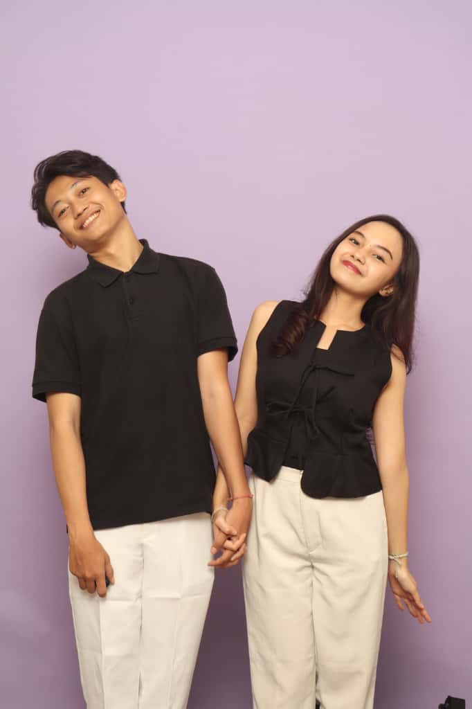
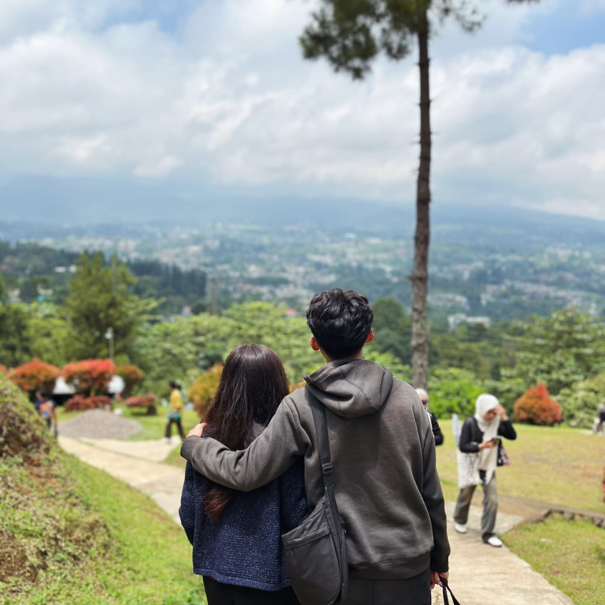
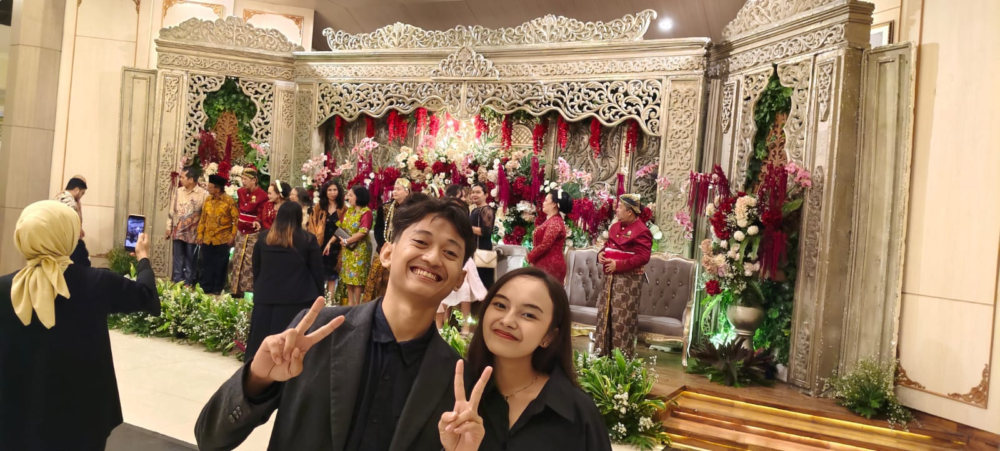
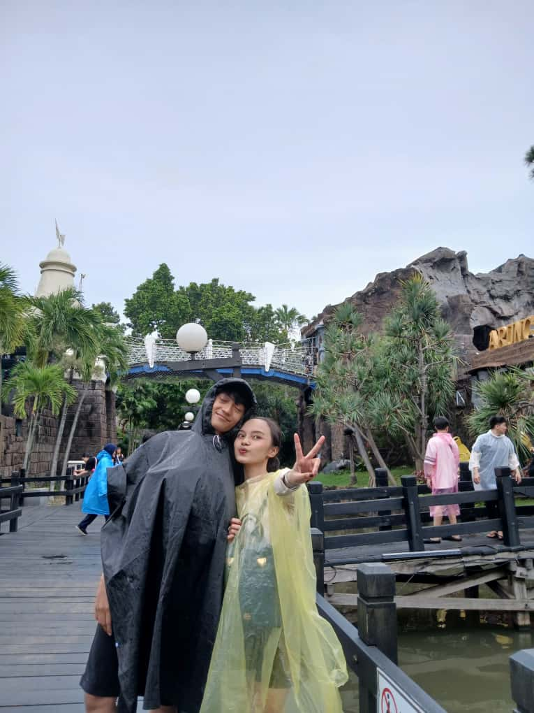
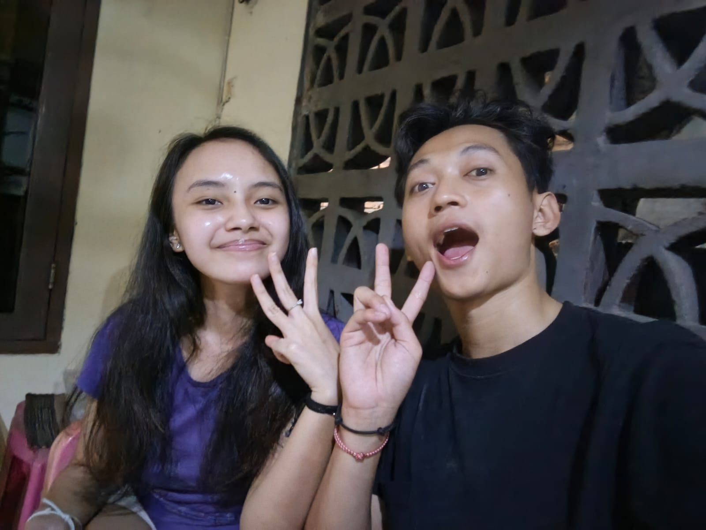
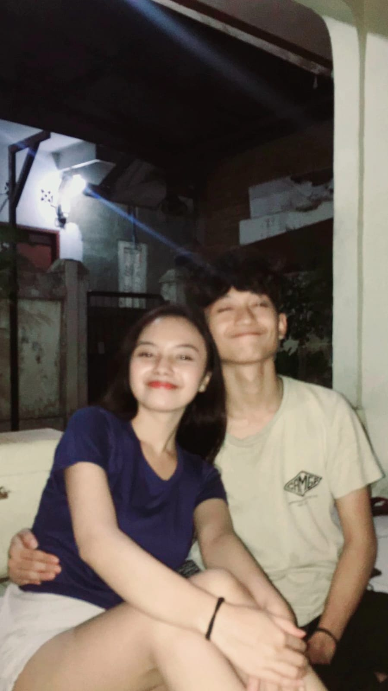

Happy 20th Birthday
Laurencia Novena
Selamat ulang tahun yang ke-20, sayang! Semoga hari ini membawa kebahagiaan sebanyak kamu membawa kebahagiaan ke hidupku.
My Dearest Lau,
20 tahun... waktu yang luar biasa untuk merayakanmu. Melihatmu tumbuh dan menjadi wanita hebat seperti sekarang adalah sebuah anugerah.
Aku sangat bersyukur bisa menjadi bagian dari perjalananmu. Semoga di usia yang baru ini, semua impianmu terwujud.
Aku cinta kamu.
Our Sweet Memories






Moments to Remember
With all my love,
Your Sweet Partner